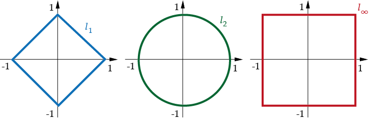
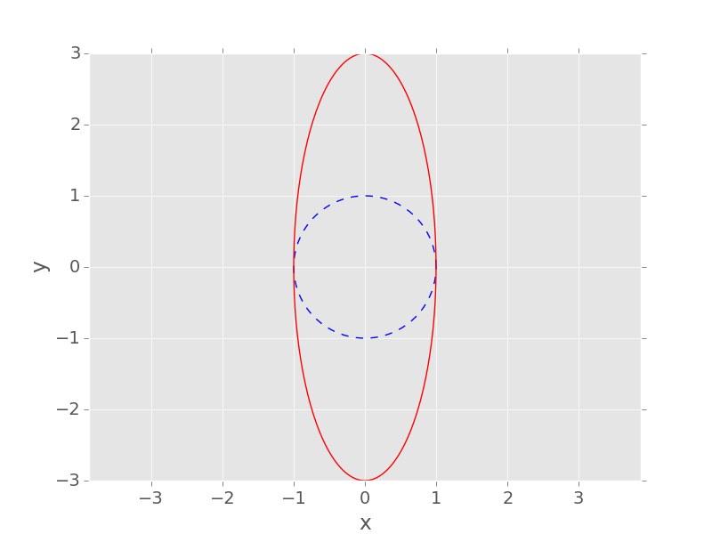
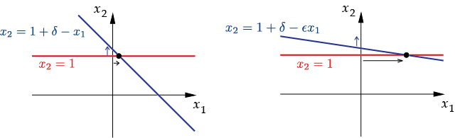
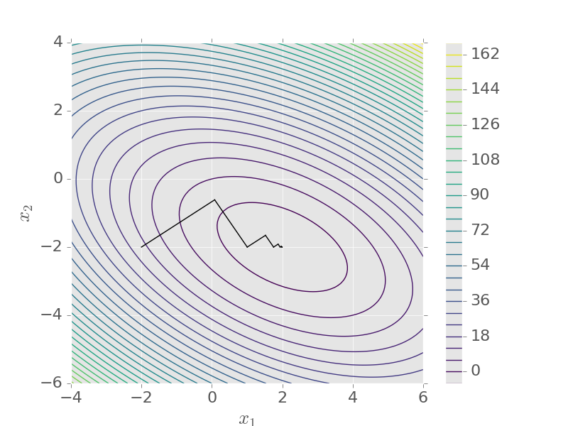
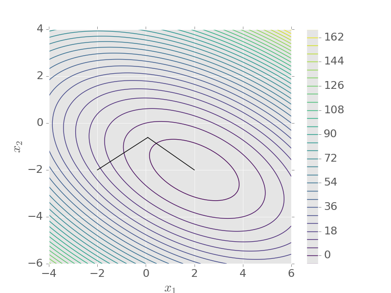

MATH2731 Computational Mathematics II
\[ A\mathbf{x} = \mathbf{b}, \qquad A\in\mathbb{R}^{n\times n}, \quad \mathbf{x}, \mathbf{b}\in\mathbb{R}^n \]
\[ L = \begin{pmatrix} l_{11} & 0 & \cdots & 0\\ l_{21} & l_{22} & \ddots & \vdots\\ \vdots & &\ddots & 0\\ l_{n1} & \cdots & \cdots & l_{nn} \end{pmatrix}, \qquad \det(L) = l_{11}l_{22}\cdots l_{nn} \]
Solve \(L\mathbf{x} = \mathbf{b}\) for \(n=4\) \[ \begin{aligned} l_{11}x_1 &= b_1,\\ l_{21}x_1 + l_{22}x_2 &= b_2,\\ l_{31}x_1 + l_{32}x_2 + l_{33}x_3 &= b_3,\\ l_{41}x_1 + l_{42}x_2 + l_{43}x_3 + l_{44}x_4 &= b_4. \end{aligned} \qquad\implies\qquad x_1 = \frac{b_1}{l_{11}}, \;\; x_2 = \frac{b_2 - l_{21}x_1}{l_{22}}, \;\; \ldots \]
Forward substitution for lower triangular \(L\mathbf{x}=\mathbf{b}\): \[ x_j = \frac{b_j - \sum_{k=1}^{j-1}l_{jk}x_k}{l_{jj}}, \quad j=1,\ldots,n. \]
Backward substitution for upper triangular \(U\mathbf{x}=\mathbf{b}\): \[ x_j = \frac{b_j - \sum_{k=j+1}^{n}u_{jk}x_k}{u_{jj}}, \quad j=n,\ldots,1. \]
Count the floating-point operations (\(+\), \(-\), \(\times\), \(\div\))
\[ \sum_{j=1}^n\Big(1 + 2(j-1)\Big) = 2\sum_{j=1}^nj - \sum_{j=1}^n1 = n(n+1) - n = n^2. \]
Transform to upper triangular form \[ A=\begin{pmatrix} 1 & 2 & 1\\ 1 & -2 & 2\\ 2 & 12 & -2 \end{pmatrix}, \quad \mathbf{b}=\begin{pmatrix} 0\\ 4\\ 4 \end{pmatrix} \]
Stage 1: \(m_{21}=1\), \(m_{31}=2\) \[ A^{(2)}=\begin{pmatrix} 1 & 2 & 1\\ 0 & -4 & 1\\ 0 & 8 & -4 \end{pmatrix}, \quad \mathbf{b}^{(2)}=\begin{pmatrix} 0\\ 4\\ 4 \end{pmatrix} \]
Transform to upper triangular form (continued) Stage 2: \(m_{32}=-2\) \[ A^{(3)}=\begin{pmatrix} 1 & 2 & 1\\ 0 & -4 & 1\\ 0 & 0 & -2 \end{pmatrix}, \quad \mathbf{b}^{(3)}=\begin{pmatrix} 0\\ 4\\ 12 \end{pmatrix} \]
Back substitution: \(x_3=-6\), \(\; x_2=-\tfrac{5}{2}\), \(\; x_1=11\).
Gaussian elimination Let \(A^{(1)}=A\), \(\mathbf{b}^{(1)}=\mathbf{b}\). For \(k = 1, \ldots, n-1\):
\(A^{(n)}=U\) is upper triangular, provided the pivots \(a_{kk}^{(k)}\) are non-zero.
Stage \(k\): \(n-k\) multipliers, then update an \((n-k)\times(n-k)\) block \[ N \approx \sum_{k=1}^{n-1}2(n-k)^2 = 2\sum_{j=1}^{n-1}j^2 \approx \tfrac23n^3 \]
Each stage of elimination is left-multiplication by a lower triangular \(F^{(k)}\): \[ F^{(1)}A=\begin{pmatrix} 1 & 0 & 0\\ -1 & 1 & 0\\ -2 & 0 & 1 \end{pmatrix} \begin{pmatrix} 1 & 2 & 1\\ 1 & -2 & 2\\ 2 & 12 & -2 \end{pmatrix} = \begin{pmatrix} 1 & 2 & 1\\ 0 & -4 & 1\\ 0 & 8 & -4 \end{pmatrix} = A^{(2)} \] \[ F^{(2)}A^{(2)}= \begin{pmatrix} 1 & 0 & 0\\ 0 & 1 & 0\\ 0 & 2 & 1 \end{pmatrix} \begin{pmatrix} 1 & 2 & 1\\ 0 & -4 & 1\\ 0 & 8 & -4 \end{pmatrix} = \begin{pmatrix} 1 & 2 & 1\\ 0 & -4 & 1\\ 0 & 0 & -2 \end{pmatrix} = U \]
\[ U = F^{(n-1)}\cdots F^{(1)}A \quad \implies \quad A = (F^{(1)})^{-1}\cdots (F^{(n-1)})^{-1}U \]
\[ (F^{(1)})^{-1}\cdots (F^{(n-1)})^{-1} = \begin{pmatrix} 1 & 0& \cdots&0\\ m_{2,1} & 1 &\ddots&\vdots\\ \vdots & \vdots&\ddots&0\\ m_{n,1} & m_{n,2} &\cdots &1 \end{pmatrix} := L \]
LU decomposition Let \(U\) be the upper triangular matrix from Gaussian elimination of \(A\) (without pivoting), and \(L\) the unit lower triangular matrix of multipliers. Then \(A = LU\).
\[ A\mathbf{x}=\mathbf{b} \iff LU\mathbf{x}=\mathbf{b} \]
A\b, not inv(A)*bSolve the earlier example by LU decomposition \[ \begin{pmatrix} 1 & 2 & 1\\ 1 & -2 & 2\\ 2 & 12 & -2 \end{pmatrix} = \begin{pmatrix} 1 & 0 & 0\\ 1 & 1 & 0\\ 2 & -2 & 1 \end{pmatrix} \begin{pmatrix} 1 & 2 & 1\\ 0 & -4 & 1\\ 0 & 0 & -2 \end{pmatrix} \]
\(L\mathbf{y}=\mathbf{b}\): \(\quad y_1 = 0, \;\; y_2 = 4-y_1 =4, \;\; y_3=4-2y_1+2y_2 = 12\)
\(U\mathbf{x} = \mathbf{y}\): \(\quad x_3 = -6, \;\; x_2=-\tfrac14(4-x_3)=-\tfrac52, \;\; x_1 = -2x_2 - x_3 = 11\)
A = [1 2 1; 1 -2 2; 2 12 -2];
[L, U, P] = lu(A) % MATLAB pivots (see below), so P is a permutation matrix
% Reusing the factorisation for many right-hand sides
n = 2000; A = rand(n); B = rand(n, 100); % 100 right-hand sides
tic
for j = 1:100
x = A \ B(:, j); % factorises A every time
end
t1 = toc;
tic
[L, U, P] = lu(A); % factorise once...
for j = 1:100
x = U \ (L \ (P*B(:, j))); % ...then two triangular solves each time
end
t2 = toc;
fprintf('Backslash each time: %.2f s, LU once then reuse: %.2f s\n', t1, t2);Zero pivot, even though \(A\) is non-singular: \[ A = \begin{pmatrix} 0 & 1\\ 1 & 1 \end{pmatrix} \]
A small pivot \[ \begin{aligned} \epsilon x_1 + x_2 &= 1,\\ x_1 + x_2 &= 2, \end{aligned} \qquad x_1 = \tfrac{1}{1-\epsilon} \approx 1, \quad x_2 = \tfrac{1-2\epsilon}{1-\epsilon} \approx 1 \]
No pivoting: \(m_{21} = 1/\epsilon\), so \(\big(1 - \tfrac1\epsilon\big)x_2 = 2 - \tfrac1\epsilon\). With \(\epsilon = 10^{-20}\): \(x_2 = 1\), but \(x_1 = (1 - x_2)/\epsilon = 0\) ✗
Rows swapped: \(m_{21} = \epsilon\), so \((1-\epsilon)x_2 = 1 - 2\epsilon\): \(x_2 = 1\), \(x_1 = 2 - x_2 = 1\) ✓
Partial pivoting At each stage \(k\), find the row \(p\geq k\) for which \(|a_{pk}^{(k)}|\) is largest, and swap rows \(k\) and \(p\) (in both \(A^{(k)}\) and \(\mathbf{b}^{(k)}\)). Then \(|m_{ik}|\leq 1\).
lu and \ pivot automaticallyep = 1e-20;
A = [ep 1; 1 1]; b = [1; 2];
% Gaussian elimination WITHOUT pivoting
m = A(2,1)/A(1,1);
u22 = A(2,2) - m*A(1,2);
y2 = b(2) - m*b(1);
x2 = y2/u22;
x1 = (b(1) - A(1,2)*x2)/A(1,1);
disp([x1; x2]) % gives [0; 1]: x1 is completely wrong
% Backslash uses partial pivoting
disp(A \ b) % gives [1; 1]Vector norm A real-valued function on \(\mathbb{R}^n\) such that, for all \(\mathbf{x},\mathbf{y}\in \mathbb{R}^n\), \(\alpha\in\mathbb{R}\):
\[ \|\mathbf{x}\|_2 := \sqrt{\sum_{k=1}^n x_k^2}, \qquad \|\mathbf{x}\|_1 := \sum_{k=1}^n |x_k|, \qquad \|\mathbf{x}\|_\infty := \max_{k} |x_k| \]
\[ \|\mathbf{x}\|_p = \left(\sum_{k=1}^n |x_k|^p\right)^{1/p}, \quad p\geq 1 \]
\(\mathbf{a}=(1,-2,3)^\top\), \(\mathbf{b}=(2,0,-1)^\top\), \(\mathbf{c}=(0,1,4)^\top\)
| \(\ell_1\) | \(\ell_2\) | \(\ell_\infty\) | |
|---|---|---|---|
| \(\mathbf{a}\) | 6 | \(\sqrt{14} \approx 3.74\) | 3 |
| \(\mathbf{b}\) | 3 | \(\sqrt{5} \approx 2.24\) | 2 |
| \(\mathbf{c}\) | 5 | \(\sqrt{17} \approx 4.12\) | 4 |
\(\|\mathbf{x}\|_1 \geq \|\mathbf{x}\|_2 \geq \|\mathbf{x}\|_\infty\), but different norms can order vectors differently.
\[ \{\mathbf{x}\in\mathbb{R}^2 : \|\mathbf{x}\|_p=1\}, \quad p=1,2,\infty \]

Matrix norm A real-valued function on \(\mathbb{R}^{n\times n}\) such that, for all \(A,B\in\mathbb{R}^{n\times n}\), \(\alpha\in\mathbb{R}\):
Induced (operator) norm \[ \|A\|_p := \sup_{\mathbf{x}\neq \boldsymbol{0}}\frac{\|A\mathbf{x}\|_p}{\|\mathbf{x}\|_p} = \max_{\|\mathbf{x}\|_p=1}\|A\mathbf{x}\|_p \]
Induced norms are matrix norms The induced norm of any vector norm is a matrix norm, and \(\|A\mathbf{x}\| \leq \|A\|\|\mathbf{x}\|\).
\(A = \begin{pmatrix} 0 & 1\\ 3 & 0 \end{pmatrix}\) in the \(\ell_2\)-norm
\[ \mathbf{x}=\begin{pmatrix}\cos\theta\\ \sin\theta\end{pmatrix} \implies A\mathbf{x} = \begin{pmatrix} \sin\theta\\ 3\cos\theta \end{pmatrix} \]
\[ \begin{aligned} \|A\|_2 &= \max_\theta\big(\sin^2\theta + 9\cos^2\theta \big)^{1/2}\\ &= \max_\theta\big(1 + 8\cos^2\theta\big)^{1/2} = 3 \end{aligned} \]

Matrix norms induced by \(\ell_1\) and \(\ell_\infty\) \[ \|A\|_1 = \max_{j}\sum_{i=1}^n|a_{ij}| \;\; \text{(max column sum)}, \qquad \|A\|_\infty = \max_{i}\sum_{j=1}^n|a_{ij}| \;\; \text{(max row sum)} \]
Example \[ A = \begin{pmatrix} -7 & 3 & -1\\ 2 & 4 & 5\\ -4 & 6 & 0 \end{pmatrix} \implies \|A\|_1 = \max\{13, 13, 6\} = 13, \quad \|A\|_\infty = \max\{11,11,10\} = 11 \]
Spectral radius: \(\rho(A) = \max\{|\lambda| : \lambda \text{ an eigenvalue of } A\}\)
Spectral norm \[ \|A\|_2 = \sqrt{\rho(A^\top A)} \]
\(A = \begin{pmatrix} 0 & 1\\ 3 & 0 \end{pmatrix}\) \[ A^\top A = \begin{pmatrix} 0 & 3\\ 1 & 0 \end{pmatrix} \begin{pmatrix} 0 & 1\\ 3 & 0 \end{pmatrix} =\begin{pmatrix} 9 & 0\\ 0 & 1 \end{pmatrix} \implies \|A\|_2=\sqrt{9}=3 \]
Well conditioned vs ill-conditioned \[ \begin{pmatrix} 1 & 1\\ 0 & 1 \end{pmatrix} \mathbf{x} = \begin{pmatrix} 1 + \delta\\ 1 \end{pmatrix} \implies \mathbf{x}= \begin{pmatrix} \delta\\ 1 \end{pmatrix}, \qquad \begin{pmatrix} \epsilon & 1\\ 0 & 1 \end{pmatrix} \mathbf{x} = \begin{pmatrix} 1 + \delta\\ 1 \end{pmatrix} \implies \mathbf{x}= \begin{pmatrix} \delta/\epsilon\\ 1 \end{pmatrix} \]

Error \(\delta\mathbf{b}\) in the data gives error \(\delta\mathbf{x} = A^{-1}\delta\mathbf{b}\): \[ \frac{\|\delta\mathbf{x}\|/\|\mathbf{x}\|}{\|\delta\mathbf{b}\|/\|\mathbf{b}\|} = \frac{\|A^{-1}\delta\mathbf{b}\|}{\|\delta\mathbf{b}\|}\,\frac{\|A\mathbf{x}\|}{\|\mathbf{x}\|} \leq \|A^{-1}\|\|A\| \]
Condition number \[ \kappa_*(A) = \|A^{-1}\|_*\|A\|_* \]
Condition numbers in the 1-norm, \(0 < \epsilon \ll 1\) \[ A = \begin{pmatrix} 1 & 1\\ 0 & 1 \end{pmatrix}, \quad A^{-1} = \begin{pmatrix} 1 & -1\\ 0 & 1 \end{pmatrix} \implies \kappa_1(A) = 2\cdot 2 = 4 \]
\[ B = \begin{pmatrix} \epsilon & 1\\ 0 & 1 \end{pmatrix}, \quad B^{-1} = \frac{1}{\epsilon}\begin{pmatrix} 1 & -1\\ 0 & \epsilon \end{pmatrix} \implies \kappa_1(B) = 2\cdot\frac{1 + \epsilon}{\epsilon} \to \infty \text{ as } \epsilon \to 0 \]
Hilbert matrix \((h_n)_{ij} = \frac{1}{i+j-1}\) \(\kappa_2(H_5) \approx 4.8\times 10^5\), \(\quad\kappa_2(H_{20})\approx 2.5\times 10^{28}\)
Rounding errors of relative size \(\epsilon_{\rm M}\) in the data give \[ \frac{\|\hat{\mathbf{x}} - \mathbf{x}\|}{\|\mathbf{x}\|} \lesssim \kappa(A)\,\epsilon_{\rm M} \]
condest (estimate) vs cond (exact \(\kappa_2\))ns = 2:13; kappa = zeros(size(ns)); err = kappa;
for j = 1:length(ns)
n = ns(j); H = hilb(n);
x = ones(n, 1); b = H*x; % so the exact solution is all ones
kappa(j) = cond(H);
err(j) = norm(H\b - x)/norm(x);
end
figure
semilogy(ns, kappa, 'o-', ns, err, 's-', ns, kappa*eps/2, '--', ...
'LineWidth', 2.5, 'MarkerSize', 8)
legend('condition number \kappa_2(H_n)', 'relative error in x', ...
'\kappa_2(H_n) \epsilon_M', 'Location', 'northwest')
xlabel('n'), set(gca, 'FontSize', 18), grid onSymmetric positive definite (SPD) \(A\) is SPD if \(A = A^\top\) and \(\mathbf{x}^\top A\mathbf{x}>0\) for every \(\mathbf{x}\neq 0\) \(\;\iff\;\) all eigenvalues positive.
Show that \(A\) is SPD \[ A = \begin{pmatrix} 3 & 1 & -1\\ 1 & 4 & 2\\ -1 & 2 & 5 \end{pmatrix} \]
Eigenvalues \(\approx 1.29\), \(4.14\), \(6.57\) (eig(A)), all positive.
Or complete the square: \[ \begin{aligned} \mathbf{x}^\top A\mathbf{x} &= 3x_1^2 + 4x_2^2 + 5x_3^2 + 2x_1x_2 + 4x_2x_3 - 2x_1x_3\\ &= x_1^2 + x_2^2 + 2x_3^2 + (x_1+x_2)^2 + (x_1-x_3)^2 + 2(x_2+x_3)^2 \end{aligned} \]
For \(A\) SPD, minimise \[ f(\mathbf{x}) = \tfrac12\mathbf{x}^\top A\mathbf{x} -\mathbf{b}^\top\mathbf{x} \]
Line search: \(\mathbf{x}_{k+1} = \mathbf{x}_k + \alpha_k\mathbf{d}_k\), choosing \(\alpha_k\) to minimise \(f\) along the line: \[ f(\mathbf{x}_{k} + \alpha\mathbf{d}_{k}) = \big(\tfrac12\mathbf{d}_{k}^\top A\mathbf{d}_{k}\big)\alpha^2 + \mathbf{d}_{k}^\top\big( A\mathbf{x}_k - \mathbf{b} \big)\alpha + \text{const.} \]
\[ \mathbf{r}_k := A\mathbf{x}_k - \mathbf{b} \quad \implies \quad \alpha_k = - \frac{\mathbf{d}_k^\top\mathbf{r}_k}{\mathbf{d}_k^\top A\mathbf{d}_k} \]
\[ \mathbf{d}_k = - \nabla f (\mathbf{x}_k) = -\mathbf{r}_k \]
\(\begin{pmatrix} 3 & 2\\ 2 & 6 \end{pmatrix}\mathbf{x}=\begin{pmatrix} 2\\ -8 \end{pmatrix}\), \(\;\mathbf{x}_0=(-2,-2)^\top\)
\[ \mathbf{d}_0 = \begin{pmatrix} 12\\ 8 \end{pmatrix}, \quad \alpha_0 = \frac{\mathbf{d}_0^\top\mathbf{d}_0}{\mathbf{d}_0^\top A\mathbf{d}_0} = \frac{208}{1200} \] \[ \mathbf{x}_1 = \mathbf{x}_0 + \alpha_0\mathbf{d}_0 \approx \begin{pmatrix} 0.08\\ -0.613 \end{pmatrix} \]

Steepest descent zig-zags: error decreases by a factor of about \[ \frac{\kappa-1}{\kappa+1} \text{ per step}, \qquad \kappa = \kappa_2(A) = \frac{\lambda_{\max}}{\lambda_{\min}}. \]
Instead, choose search directions that are \(A\)-conjugate: \[ \mathbf{d}_{k+1}^\top A \mathbf{d}_k = 0 \]
\[ \mathbf{d}_{k+1} = -\mathbf{r}_{k+1} + \beta_k\mathbf{d}_k \quad\implies\quad 0 = -\mathbf{r}_{k+1}^\top A \mathbf{d}_k + \beta_k\mathbf{d}_k^\top A \mathbf{d}_k \]
\[ \implies \quad \beta_k = \frac{\mathbf{r}_{k+1}^\top A\mathbf{d}_k}{\mathbf{d}_k^\top A \mathbf{d}_k} \]
Conjugate gradient method Start with \(\mathbf{x}_0\) and \(\mathbf{d}_0 = -\mathbf{r}_0 = \mathbf{b} - A\mathbf{x}_0\). For \(k=0,1,\ldots\):
Same system, \(\mathbf{x}_0=(-2,-2)^\top\)
First step as before: \(\mathbf{x}_1 = (0.08, -0.613)^\top\)
\[ \mathbf{r}_1 = \begin{pmatrix} -2.99\\ 4.48 \end{pmatrix}, \quad \beta_0 = 0.139 \] \[ \mathbf{d}_1 = -\mathbf{r}_1 + \beta_0\mathbf{d}_0 = \begin{pmatrix} 4.66\\-3.36 \end{pmatrix} \] \[ \alpha_1 = 0.412 \implies \mathbf{x}_2 = \begin{pmatrix} 2\\-2 \end{pmatrix} \]

Theorem The residuals of the conjugate gradient method are mutually orthogonal: \(\mathbf{r}_j^\top \mathbf{r}_k = 0\) for \(j=0,\ldots,k-1\).
A = [3 2; 2 6]; b = [2; -8];
[X, Y] = meshgrid(linspace(-4, 6, 200), linspace(-6, 4, 200));
F = 0.5*(A(1,1)*X.^2 + 2*A(1,2)*X.*Y + A(2,2)*Y.^2) - b(1)*X - b(2)*Y;
xs = zeros(2, 11); xs(:,1) = [-2; -2]; % steepest descent
for k = 1:10
d = b - A*xs(:,k); % d = -r
xs(:,k+1) = xs(:,k) + (d'*d)/(d'*A*d)*d;
end
xc = zeros(2, 3); xc(:,1) = [-2; -2]; % conjugate gradients
r = A*xc(:,1) - b; d = -r;
for k = 1:2
alpha = -(d'*r)/(d'*A*d);
xc(:,k+1) = xc(:,k) + alpha*d;
rnew = A*xc(:,k+1) - b;
beta = (rnew'*A*d)/(d'*A*d);
d = -rnew + beta*d; r = rnew;
endfigure
contour(X, Y, F, 30), hold on
plot(xs(1,:), xs(2,:), 'o-', 'LineWidth', 2.5, 'MarkerSize', 8)
plot(xc(1,:), xc(2,:), 's-', 'LineWidth', 2.5, 'MarkerSize', 8), hold off
legend('contours of f', 'steepest descent', 'conjugate gradients', 'Location', 'northwest')
xlabel('x_1'), ylabel('x_2'), axis equal, set(gca, 'FontSize', 18)A = gallery('poisson', 100); % sparse SPD matrix, 10^4-by-10^4, at most 5 non-zeros per row
figure
spy(A(1:500, 1:500))
title('Sparsity pattern (first 500 rows and columns)'), set(gca, 'FontSize', 18)
b = ones(size(A, 1), 1);
[x, flag, relres, iter, resvec] = pcg(A, b, 1e-8, 1000);
figure
semilogy(0:length(resvec)-1, resvec/norm(b), 'LineWidth', 2.5)
legend('conjugate gradients', 'Location', 'northeast')
xlabel('iteration k'), ylabel('relative residual'), set(gca, 'FontSize', 18), grid on
fprintf('CG converged in %d iterations for n = %d unknowns\n', iter, size(A, 1));